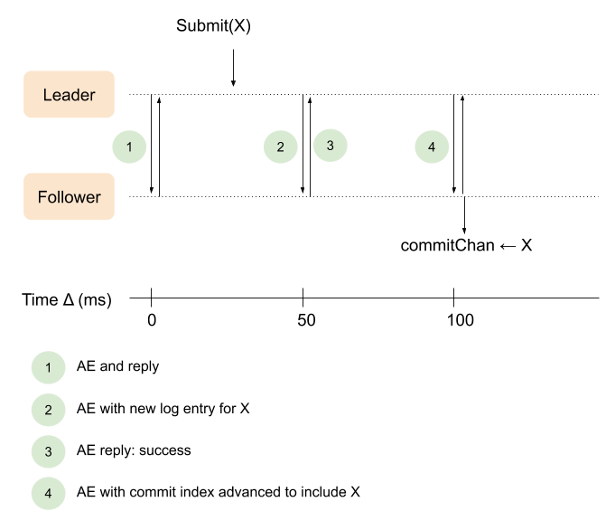
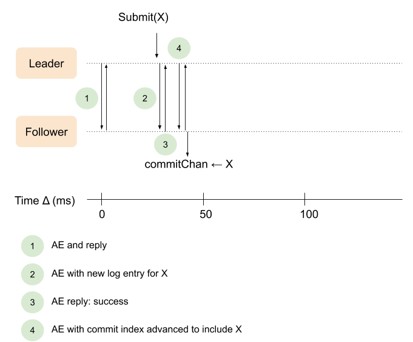

This is Part 3 in a series of posts describing the Raft distributed consensus algorithm and its complete implementation in Go. Here is a list of posts in the series:
- Part 0: Introduction
- Part 1: Elections
- Part 2: Commands and log replication
- Part 3: Persistence and optimizations (this post)
- Part 4: Key/Value database
- Part 5: Exactly-once delivery
In this part we'll complete our basic implementation of Raft, by adding persistence and some optimizations. All the code for this part is located in this directory.
Persistence
The goal of a consensus algorithm like Raft is to create a system that has higher availability than its parts by replicating a task across isolated servers. So far, we've been focusing on the fault scenario of network partitions, where some servers in the cluster become disconnected from others (or from clients). Another mode of failure is crashes, wherein a server stops working and restarts.
While for other servers it appears like a network partition - a server got temporarily disconnected, for the crashed server itself the situation is quite different because by restarting all its volatile memory state is lost.
Precisely for this reason, Figure 2 in the Raft paper clearly marks which state should be persistent; persistent state is written and flushed to nonvolatile storage every time it's updated. Whatever state has to be persisted by a server is persisted before the server issues the next RPC or replies to an ongoing RPC.
Raft can get by with persisting only a subset of its state, namely:
- currentTerm - the latest term this server has observed
- votedFor - the peer ID for whom this server voted in the latest term
- log - Raft log entries
Q: Why are commitIndex and lastApplied volatile?
A: commitIndex is volatile because Raft can figure out a correct value for it after a reboot using just the persistent state. Once a leader successfully gets a new log entry committed, it knows everything before that point is also committed. A follower that crashes and comes back up will be told about the right commitIndex whenever the current leader sends it an AE.
lastApplied starts at zero after a reboot because the basic Raft algorithm assumes the service (e.g., a key/value database) doesn’t keep any persistent state. Thus its state needs to be completely recreated by replaying all log entries. This is rather inefficient, of course, so many optimization ideas are possible. Raft supports snapshotting the log when it grows large; this is described in section 6 of the Raft paper, and is out of scope for this series of posts.
Command delivery semantics
In Raft, depending on circumstances a command may be delivered to a client more than once. There are several scenarios in which this can happen, including crashes an restarts (when a log is replayed again).
In terms of message delivery semantics, Raft is in the at-least-once camp. Once a command is submitted, it will be replicated to all clients eventually, but some clients may see the same command more than once. Therefore, it's recommended that commands carry unique IDs and clients ignore commands that were already delivered. This is described in a bit more detail in section 8 of the Raft paper.
Storage interface
To implement persistence, we're adding the following interface to the code:
type Storage interface {
Set(key string, value []byte)
Get(key string) ([]byte, bool)
// HasData returns true iff any Sets were made on this Storage.
HasData() bool
}
You can think of it as a map from string to a generic byte slice, backed by a persistent store.
Restoring and saving state
The CM constructor will now take a Storage as an argument and call:
if cm.storage.HasData() {
cm.restoreFromStorage(cm.storage)
}
The restoreFromStorage method is also new. It loads the persisted state variables from storage, deserializing them using the standard encoding/gob package:
func (cm *ConsensusModule) restoreFromStorage(storage Storage) {
if termData, found := cm.storage.Get("currentTerm"); found {
d := gob.NewDecoder(bytes.NewBuffer(termData))
if err := d.Decode(&cm.currentTerm); err != nil {
log.Fatal(err)
}
} else {
log.Fatal("currentTerm not found in storage")
}
if votedData, found := cm.storage.Get("votedFor"); found {
d := gob.NewDecoder(bytes.NewBuffer(votedData))
if err := d.Decode(&cm.votedFor); err != nil {
log.Fatal(err)
}
} else {
log.Fatal("votedFor not found in storage")
}
if logData, found := cm.storage.Get("log"); found {
d := gob.NewDecoder(bytes.NewBuffer(logData))
if err := d.Decode(&cm.log); err != nil {
log.Fatal(err)
}
} else {
log.Fatal("log not found in storage")
}
}
The mirror method is persistToStorage - it encodes and saves all these state variables to the provided Storage:
func (cm *ConsensusModule) persistToStorage() {
var termData bytes.Buffer
if err := gob.NewEncoder(&termData).Encode(cm.currentTerm); err != nil {
log.Fatal(err)
}
cm.storage.Set("currentTerm", termData.Bytes())
var votedData bytes.Buffer
if err := gob.NewEncoder(&votedData).Encode(cm.votedFor); err != nil {
log.Fatal(err)
}
cm.storage.Set("votedFor", votedData.Bytes())
var logData bytes.Buffer
if err := gob.NewEncoder(&logData).Encode(cm.log); err != nil {
log.Fatal(err)
}
cm.storage.Set("log", logData.Bytes())
}
We implement persistence simply by calling pesistToStorage at every point in which these state variables change. If you look at the diff between the CM's code in Part 2 and this part, you'll see them sprinkled in a handful of places.
Naturally, this is not the most efficient way to do persistence, but it's simple and it works, so it's enough for our needs here. The largest inefficiency is saving the whole log, which can be large in real applications. To really address this, Raft has a log compaction mechanism which is described in section 7 of the paper. We're not going to implement compaction, but feel free to add it to our implementation as an exercise.
Crash resiliency
With persistence implemented, our Raft cluster becomes somewhat resilient to crashes. As long as a minority of peers in a cluster crashes and restarts at some later point, the cluster will remain available to clients (perhaps after a short delay where a new leader is elected, in case the leader was one of the crashed peers). As a reminder, a Raft cluster with 2N+1 servers will tolerate N failed servers and will remain available as long as the other N+1 servers remain connected to each other.
If you look at the tests for this part, you'll notice that many new tests were added. Crash resiliency makes it possible to test a much larger portfolio of contrived scenarios which are also described in the paper to some degree. It's highly recommended to run a couple of crash tests and observe what's happening.
Unreliable RPC delivery
Since we're ramping up testing in this part, another aspect of resiliency I'd like to bring to your attention is unreliable RPC delivery. So far we've assumed that RPCs sent between connected servers will arrive to their destination, perhaps with a small delay. If you look in server.go, you'll notice it uses a type called RPCProxy to implement these delays, among other things. Each RPC is delayed by 1-5 ms to simulate the real world for peers located in the same data center.
Another thing RPCProxy lets us implement is optional unreliable delivery. With the RAFT_UNRELIABLE_RPC env var on, once in a while RPCs will be delayed significantly (by 75 ms), or dropped altogether. This simulates real-world network glitches.
We can rerun all our tests with RAFT_UNRELIABLE_RPC on and observe how the Raft cluster behaves in the presence of these faults - another highly recommended exercise. If you're feeling extra motivated, adjust RPCProxy to not only delay RPC requests, but also RPC replies. This should require just a handful of additional lines of code.
Optimizing sending AppendEntries
The current leader implementation has a major inefficiency, as I've briefly noted in Part 2. Leaders send AEs in leaderSendHeartbeats, which is invoked by a ticking timer every 50 ms. Suppose a new command is submitted; instead of notifying followers about it immediately, the leader will wait until the next 50 ms boundary. It gets even worse, because two AE round-trips are needed to notify followers that a command is committed. Here's a diagram showing how it works right now:
At time (1) the leader sends a heartbeat AE to a follower, and gets a response back within a few ms. A new command is submitted, say, 35 ms later. The leader waits until (2) the next 50 ms boundary to send the updated log to the follower. The follower replies that the command was added to the log successfully (3). At this point the leader has advanced its commit index (assuming it got a majority) and can immediately notify followers, but it waits until the next 50 ms boundary (4) to do so. Finally, when the follower receives the updated leaderCommit it can notify its own client about a new committed command.
Much of the time passed between Submit(X) at the leader and commitChan <- X at the follower is an unnecessary artifact of our implementation.
What we really want is for the sequence to look like this, instead:
This is exactly what the code for this part does. Let's see the new parts of the implementation, starting with startLeader. As usual, the lines that are different from the previous part are highlighted:
func (cm *ConsensusModule) startLeader() {
cm.state = Leader
for _, peerId := range cm.peerIds {
cm.nextIndex[peerId] = len(cm.log)
cm.matchIndex[peerId] = -1
}
cm.dlog("becomes Leader; term=%d, nextIndex=%v, matchIndex=%v; log=%v", cm.currentTerm, cm.nextIndex, cm.matchIndex, cm.log)
// This goroutine runs in the background and sends AEs to peers:
// * Whenever something is sent on triggerAEChan
// * ... Or every 50 ms, if no events occur on triggerAEChan
go func(heartbeatTimeout time.Duration) {
// Immediately send AEs to peers.
cm.leaderSendAEs()
t := time.NewTimer(heartbeatTimeout)
defer t.Stop()
for {
doSend := false
select {
case <-t.C:
doSend = true
// Reset timer to fire again after heartbeatTimeout.
t.Stop()
t.Reset(heartbeatTimeout)
case _, ok := <-cm.triggerAEChan:
if ok {
doSend = true
} else {
return
}
// Reset timer for heartbeatTimeout.
if !t.Stop() {
<-t.C
}
t.Reset(heartbeatTimeout)
}
if doSend {
cm.mu.Lock()
if cm.state != Leader {
cm.mu.Unlock()
return
}
cm.mu.Unlock()
cm.leaderSendAEs()
}
}
}(50 * time.Millisecond)
}
Instead of just waiting for a 50 ms ticker, the loop in startLeader is waiting on one of two possible events:
- A send on cm.triggerAEChan
- A timer counting 50 ms
We'll see what triggers cm.triggerAEChan soon. This is the signal that an AE should be sent now. The timer resets whenever the channel is triggered, implementing the heartbeat logic - if the leader has nothing new to report, it will wait at most 50 ms.
Note also that the method that actually sends the AEs is renamed from leaderSendHeartbeats to leaderSendAEs, to better reflect its purpose in the new code.
One of the methods that triggers cm.triggerAEChan is, as we'd expect, Submit:
func (cm *ConsensusModule) Submit(command any) int {
cm.mu.Lock()
cm.dlog("Submit received by %v: %v", cm.state, command)
if cm.state == Leader {
submitIndex := len(cm.log)
cm.log = append(cm.log, LogEntry{Command: command, Term: cm.currentTerm})
cm.persistToStorage()
cm.dlog("... log=%v", cm.log)
cm.mu.Unlock()
cm.triggerAEChan <- struct{}{}
return submitIndex
}
cm.mu.Unlock()
return -1
}
The changes are:
- Whenever a new command is submitted, cm.persistToStorage is called to persist the new log entry. This is not related to the heartbeat optimization, but I point it out here anyway because it's wasn't done in Part 2 and was described earlier in this post.
- An empty struct is sent on cm.triggerAEChan. This will notify the loop in the leader goroutine.
- The lock handling is reordered a bit; we don't want to hold the lock while sending on cm.triggerAEChan since this can cause a deadlock in some cases.
- The method was changed to return the log index in case this is a leader and -1 if not (from bool in Part 2); this will be needed in Part 4.
Can you guess where the other place in the code where cm.triggerAEChan would be notified?
It's in the code that handles AE replies in the leader and advances the commit index. I won't reproduce the whole method here, only the small part of the code that changes:
if cm.commitIndex != savedCommitIndex {
cm.dlog("leader sets commitIndex := %d", cm.commitIndex)
// Commit index changed: the leader considers new entries to be
// committed. Send new entries on the commit channel to this
// leader's clients, and notify followers by sending them AEs.
cm.newCommitReadyChan <- struct{}{}
cm.triggerAEChan <- struct{}{}
}
This is a significant optimization that makes our implementation react to new commands much faster than before.
Batching command submission
The code in the previous section may have left you feeling a bit uncomfortable. There's a lot of activity now being triggered by each call to Submit - the leader immediately broadcasts RPCs to all followers. What happens if we want to submit multiple commands at once? The network connecting the Raft cluster will likely get flooded by RPCs.
While it may seem inefficient, it's actually safe. Raft RPCs are all idempotent, meaning that getting an RPC with essentially the same information multiple times does no harm.
If you're worried about the network traffic in the presence of frequent submits of many commands at once, batching should be easy to implement. The simplest way to do this is to provide a way to pass a whole slice of commands into Submit. Very little code in the Raft implementation has to change as a result, and the client will be able to submit a whole group of commands without incurring too much RPC traffic. Try it as an exercise!
Optimizing AppendEntries conflict resolution
Another optimization I'd like to discuss in this post is for reducing the number of rejected AEs required for a leader to bring a follower up-to-date in some scenarios. Recall that the nextIndex mechanism begins at the very end of the log and decrements by one each time a follower rejects an AE. In rare cases the follower can be severely out of date, and the process to update it will take a long time because each RPC round-trip only advances by one entry.
The paper describes this optimization at the very end of section 5.3, but doesn't provide much details about implementing it. To implement this, we'll extend the AE reply message with new fields:
type AppendEntriesReply struct {
Term int
Success bool
// Faster conflict resolution optimization (described near the end of section
// 5.3 in the paper.)
ConflictIndex int
ConflictTerm int
}
You can see the additional changes in the code for this part. Two places have to change:
- AppendEntries is the AE RPC handler; when followers reject an AE, they fill in ConflictIndex and ConflictTerm.
- leaderSendAEs is updated at the point where it receives these AE replies, and uses ConflictIndex and ConflictTerm to backtrack nextIndex more efficiently.
The Raft paper says:
In practice, we doubt this optimization is necessary, since failures happen infrequently and it is unlikely that there will be many inconsistent entries.
And I absolutely agree. To be able to test this optimization, I had to come up with a rather contrived test; IMHO the chances of such scenarios happening in real life are very low, and the one-time gain of a couple hundred milliseconds doesn't warrant the code complication. I'm showing it here just as an example of the many optimizations that can be applied to the uncommon cases in Raft; in terms of coding, it's a neat example of how the Raft algorithm can be slightly modified to change its behavior in some corner cases.
Raft was designed to make the common case fairly fast, at the expense of performance in uncommon cases (where failures actually happen). I believe this is the absolutely correct design choice. Optimizations like the more immediate AE delivery described in the previous section are essential, because they directly affect the common path.
On the other hand, optimizations like conflict indices for faster backtracking are, while technically interesting, not really important in practice because they provide a limited benefit in scenarios that happen during <0.01% of the lifetime of a typical cluster.
Conclusion
This concludes our core Raft implementation. Part 4 will describe a realistic application built on top of this Raft foundation - a key/value database.
For any questions or comments about these posts or the code, please send me an email or open an issue on GitHub.
If you're interested in checking out industrial-strength, battle tested implementations of Raft in Go, I recommend:
- etcd/raft is the Raft part of etcd, which is a distributed key-value database.
- hashicorp/raft is a standalone Raft consensus module that can be tied to different clients.
These implement all the features of the Raft paper, including:
- Section 6: Cluster membership changes - if one Raft server comes offline permanently, it's useful to be able to replace it with another without bringing the whole cluster down.
- Section 7: Log compaction - in real applications the log grows very large and it becomes impractical to fully persist it for every change or fully replay it in case of crashes. Log compaction defines a checkpointing mechanism that makes it possible for Raft clusters to replicate very large logs efficiently.